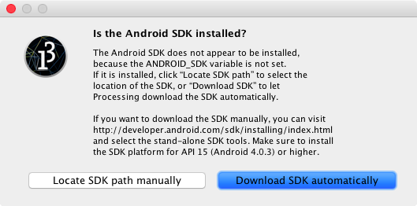
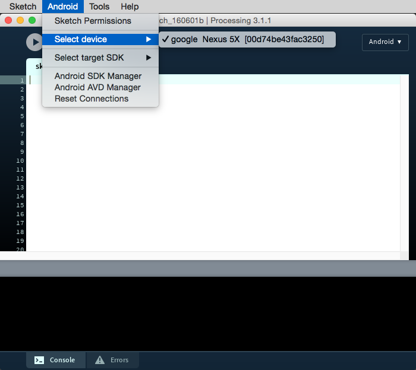

In this tutorial you will learn how to setup your system to develop in Android
The first time you run the Android mode after installing it through the CM or manually, you will be presented with this window, asking to either locate a pre-installed SDK, or download the SDK automatically:
In the case you select the "Locate SDK path manually", you need to have an SDK that inckudes Android 4.0.3 (API level 15) or higher. To manually download and install the SDK, go to this page, scroll down to the command line tools section and select the one for your OS.
If the SDK was installed succesfully, and you connect a device to the computer, you should see it in the "Select device" list:
Let's try writing a very simple sketch to run on the device. The following code is an adaptation of an example in the Interactivity tutorial for Processing, where the fullScreen() function allows us to use the entire screen of the device:
void setup() {
fullScreen();
noStroke();
fill(0);
}
void draw() {
background(204);
if (mouseX < width/2) {
rect(0, 0, width/2, height); // Left
} else {
rect(width/2, 0, width/2, height); // Right
}
}
Before testing your sketch on your device, you must: Turn on "USB Debugging" on your device - this process varies by device and which version of the OS you have installed. Try one of the following: Menu → Applications → Development, then enable USB debugging On the Nexus tablets, Settings → About tablet, then click on the Build number seven times to activate USB debugging (so weird). Connecting to Android Wear devices requires USB Debugging as well on your Wear device. Further info on connecting to your Wear device can be found on Google's Debugging over Bluetooth If you are running Windows or Linux, you need to read Google's Using Hardware Devices documentation to install a special USB driver and take care of additional settings.
Processing will start the Android emulator (which can take a long time), and then will launch thr sketch on it. Don't close the emulator after testing one sketch, just leave it open so you don't need to wait for the next sketch you want to run!